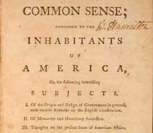

Quintus can be found at qcurtius.com. He is the author of the books On Duties, Thirty Seven, Sallust: The Conspiracy Of Catiline And The War Of Jugurtha, and other books. His work has been reviewed at Taki's Magazine. He can be followed on Twitter


One figure in early American history has the unique distinction of being a significant actor in both the American and French revolutions. Thomas Paine is not widely known today (or at least not as widely known as he should be), but his career shows him to have been a man of integrity and courageous conviction. He was born in England and moved to the American colonies as a thirty-seven-year-old adult in 1774, just as the fires of revolution began to smolder.
Discovering a latent talent for agitation and pamphleteering, he threw his energies into promoting the cause of the American rebels. His short essay Common Sense was extremely influential in swaying public opinion in favor of what was decidedly an uncertain cause. Written in a racy, colloquial English that any literate man could understand, it became something of a manifesto among revolutionaries. It is difficult to overstate the importance that this book had in popularizing the rationale for independence from Britain. Paine had a true gift for expressing complex historical and philosophical ideas in ways that the unlettered reader could digest.

During the war he used his talents to maintain the morale of Nathanael Greene’s soldiers, who were suffering greatly from lack of supplies and want of victories. His pamphlet The American Crisis (1776) is a classic of political rhetoric. Who will protest at quoting once more its stirring opening lines?
These are the times that try men’s souls: The summer soldier and the sunshine patriot will, in this crisis, shrink from the service of their country; but he that stands it now, deserves the love and thanks of man and woman. Tyranny, like Hell, is not easily conquered; yet we have this consolation with us, that the harder the conflict, the more glorious the triumph. What we obtain too cheap, we esteem too lightly: it is dearness only that gives every thing its value. Heaven knows how to put a proper price upon its goods; and it would be strange indeed if so celestial an article as freedom should not be highly rated.
He took a more active role in the new American government after 1777, but his experiences in politics were darkened by controversies and imbroglios that might have been avoided had Paine learned to be better at the game of politics. But he was an idealist, not a politician, and such men are rarely spared trouble. His problems began in 1777 when he foolishly leaked news of secret negotiations with France; for this he was publicly censured. Further scandal arose when Paine criticized Silas Deane, the man appointed to conduct negotiations with the French. Paine considered him unsuited to the job due to conflicts of interest; but Deane had powerful friends, and it was Paine who had to back down in humiliation.
At the end of the war a grateful public had awarded him a plot of land in New York state. But he was restless with revolt, and longed for further battle. His experience in America seems to have turned him into a professional revolutionary with a loathing for monarchies.
Immediately after the war in North America ended he set sail for France to agitate for revolution against the inept monarchy. Unlike most of the French revolutionaries, however, he was against mindless butchery and tried to have the French nobility exiled rather than executed. This and other indiscretions caused him to fall out of favor, and he was tossed into prison in December 1793. Released the next year, he startled public opinion with the release of a book called The Age of Reason, in which he argued for the rejection of “superstition, of false forms of government, and false theology.”
Paine turned his guns on organized religion, which (as he saw it) did little more than enslave the human mind to false doctrines:
I do not believe in the creed professed by the Jewish church, by the Roman church, by the Greek church, by the Turkish church, by the Protestant church nor by any church that I know of. My own mind is my own church. All national institutions of churches…appear to me no other than human inventions, set up to terrify and enslave mankind, and monopolize power and profit.
So it seemed to Tom Paine. The anti-clerical doctrines of the Enlightenment burned brightly in him; he could see little more than ignorance and foolery in organized belief. He was not precisely an atheist, but rather a deist. His opponents were not careful with the distinction, however. His ideas were too radical for the simple folk on both sides of the Atlantic; they could not forgive his contemptuous dismissal of their cherished beliefs. When he returned to the United States in 1802, his reputation as an atheist preceded him, and there were few old friends to greet him. He had burned his bridges nearly everywhere by this time, and died in near obscurity in 1809.
He was a man of action, better suited to wartime conditions than to peacetime politics. In retrospect he should have confined his efforts to writing and public relations instead of entering the lion’s den of political intrigue. He did not understand that where powerful men and institutions are concerned, winning every argument is not always the best policy. He was a lover of liberty and a man of integrity, but he never learned to temper his passion for these virtues with sound political judgment and a measured understanding of human nature.
Tom Paine reminded the crowned heads of England and France of their limitations. But no one ever reminded him of his own.
Read More: Will You Pay The Bill For The Coming Spinster Bubble?